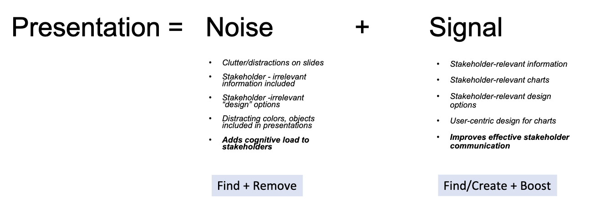

Information Visualization
Chart-1:
Source:
The relationship between voting for the Democrats and age in US presidential elections from 1972 to 2020Context:
- Why: why was this chart created (by the chart creators)?
- Who: who was this chart created for?
- What: what did the chart creators want the target audience to know/do?
- How: what data/data source did the chart creators use (if you know)?
To show the influence of young voters (under 25) on presidential election results, particularly in the context of a poll boost for Joe Biden.
The target audience are public, political analysts, journalists, and policymakers interested in understanding the dynamics of US elections.
About trends and patterns that show the increasing significance of young voters (under 25) in shaping election results over time.
The data is sourced from the American National Election Study (ANES).
Before:
After:
Improvements Made to the Chart:
- Removed the chart border
- Removed the grid lines
- Updated the X and Y axis labels for better understanding and to reduce the usage of percentage while annotating in next steps
- Removed the legend
- Leveraged the Gestalt principle of proximity and kept the data labels right next to the data they describe
- Leveraged the Gestalt principle of similarity and applied the same color to the data labels as the data they describe
- Made the data standout by using markers and annotation to shift the focus on to the right side
Pre-attentive attributes used:
- Color - Dark Blue Color for Young Voters label and annotations
- Color - Grey color for Old Voters label and annotations
- Shape - Circle shape marker on the line
- Size - final marker for both young and old voters
- Size - final annotation for both young and old voters
- Bold - Final marker and annotation
- Bold - Young Voters and Old Voters label
Chart-2:
Source:
On gun violence, the United States is an outlierContext:
- Why: why was this chart created (by the chart creators)?
- Who: who was this chart created for?
- What: what did the chart creators want the target audience to know/do?
- How: what data/data source did the chart creators use (if you know)?
To understand percentage of childhood deaths caused by firearms among high-income countries with populations over 10 million in 2021.
The chart was likely created for policymakers, public health officials, researchers, and the public interested in understanding and addressing firearm violence.
How much gun violence accounts to childhood deaths in different high-income countries with populations over 10 million in 2021. creators aimed to emphasize the importance of addressing gun violence as a public health issue.
The data source is Scott Glenn from the Institute for Health Metrics and Evaluation (IHME), who is listed as a data specialist in the article. The specific data points regarding firearm homicide rates in various countries around the world were likely obtained from public health databases, governmental reports, and other relevant sources.
Before:
After:
Improvements Made to the Chart:
- Removed the chart border
- Reduced the cluttering by combining countries with significantly less values into others
- Removed the X axis and directly annotated values.
- Added the X axis label at the top
- Changed the title to boost the signal
- Leveraged the Gestalt principle of similarity and applied the same color to the title to match with the outlier.
Pre-attentive attributes used:
- Color – used Crimson (matches with death) color to indicate the outlier
- Color – used light grey color to suppress the noise
- Color – Used Crimson color for the title to match with the outlier
- Size – used larger size for outlier annotation
- Bold – used bold for outlier annotation
- Color – used white color to make annotations visible
- Color – used grey for x axis label to shift attention from the title to the outlier for the continuity
Chart-3:
Source:
Approximately what percentage of your increased costs are you passing on to your customers?Context:
- Why: why was this chart created (by the chart creators)?
- Who: who was this chart created for?
- What: what did the chart creators want the target audience to know/do?
- How: what data/data source did the chart creators use (if you know)?
To visually represent how logistics managers are planning to cut their manufacturing orders for next three months
It was likely created for stakeholders interested in understanding the health of the manufacturing sector and its implications for the broader economy. This may include policymakers, economists, investors, business leaders, and analysts.
To understand the current condition of manufacturing orders for next three months.
The data is sourced from the CNBC Supply Chain Survey conducted among logistics managers representing various organizations.
Before:
After:
Improvements Made to the Chart:
- Converted the pie chart into horizontal bar chart to reduce cluttering
- Did not add border
- Removed the X axis and directly annotated values.
- Added the X axis label at the top
- Modified Y axis values to reduce noise
- Added percentage to the label to reduce noise
- Changed the title to boost the signal
- Leveraged the Gestalt principle of similarity and applied the same color to the title to match with the 0 or no cuts.
Pre-attentive attributes used:
- Color – Green to show that 40% of logistics managers are not cutting the orders for the next three months
- Color – light grey to reduce noise and to focus on green color
- Color – Green color for the title to match with the signal/1st bar
- Size – used larger size for annotation in the signal/1st bar
- Bold – used bold for annotation in the signal/1st bar
- Color – used white color to make annotations visible
- Color – used grey for x axis label to shift attention from the title to the signal/1st bar for continuity